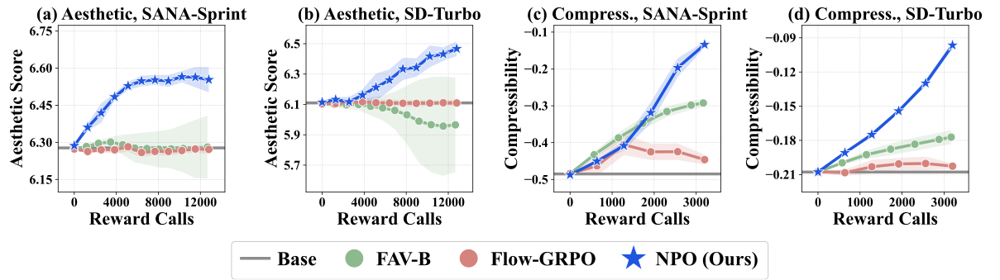
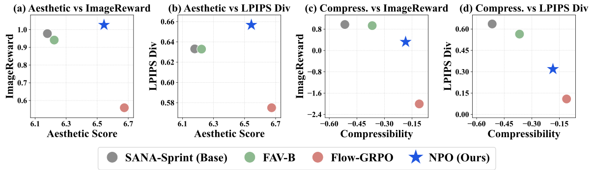
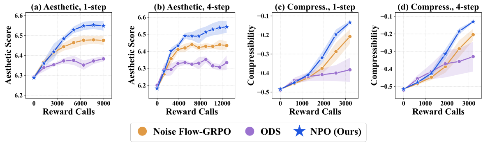
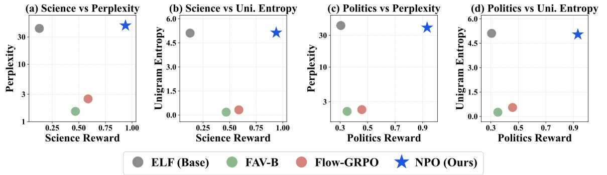
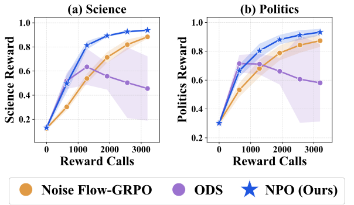
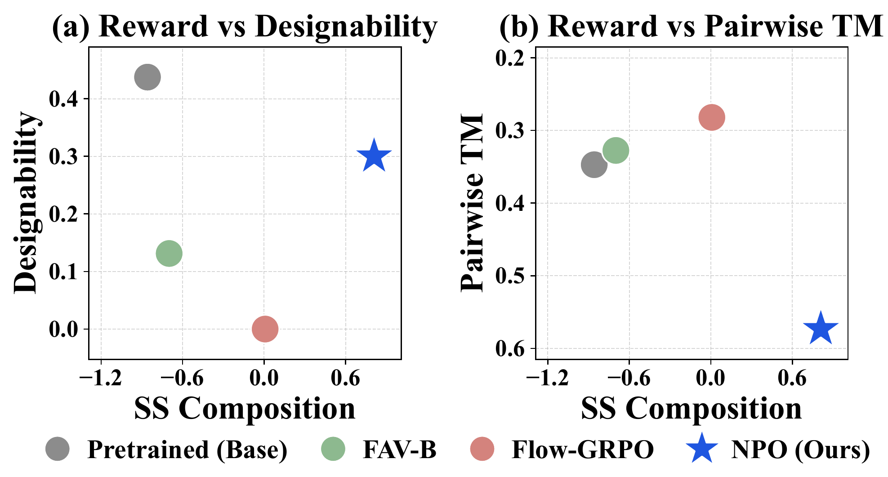
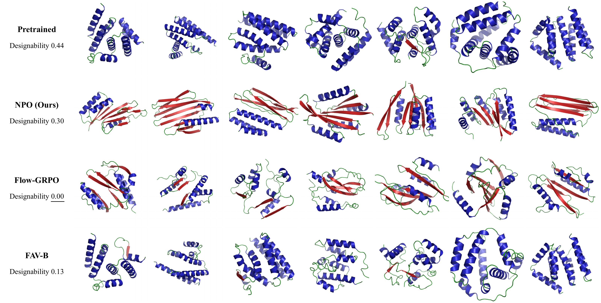
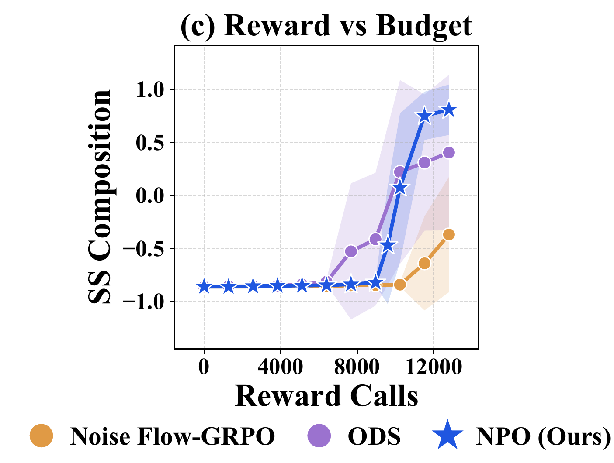

(a) Reward learning curves of NPO, direct fine-tuning, and a trajectory-based noise policy. (b) Generated samples over training for NPO
and direct fine-tuning. (c) Comparison with test-time scaling methods.
For few-step generative model alignment, direct fine-tuning can suffer from reward over‑optimization, while test-time
optimization incurs substantial inference cost. NPO efficiently aligns few-step generative models using
only black‑box rewards, while maintaining high sample quality and fast inference.
Abstract
Few-step generative models produce high-quality samples in one or a few evaluations. However, steering them toward desired properties
remains difficult, especially when only black-box reward evaluations are available. While one could apply approaches developed for
iterative diffusion and flow-based models, such as direct RL fine-tuning or test-time scaling, we find that neither transfers well to the
few-step regime: direct fine-tuning suffers from severe reward over-optimization, and test-time scaling sacrifices the efficiency
advantage of few-step generation.
We propose Noise Policy Optimization (NPO), which explicitly targets the alignment problem for few-step generative models. The key
idea is to learn an amortized flow policy over the initial noise space of the generator. The trained policy transports Gaussian noise to a
reward-tilted noise distribution, whose pushforward distribution through the frozen generator is exactly the reward-tilted output
distribution. By keeping the generator frozen, we can effectively utilize the knowledge encoded in the pretrained model, yielding a better
reward-quality trade-off than direct fine-tuning. The amortized policy moves the search cost into training, so inference adds only a
lightweight noise sampling step on top of the pretrained model. To improve sample efficiency during training, we use ELBO-based likelihood
estimation that requires only sampled endpoints rather than simulated trajectories.
Across image, language, and protein structure generation, NPO consistently achieves a better reward-quality trade-off than direct
fine-tuning, and matches test-time search methods with 16–549× lower inference cost.
Method
Noise-space target
Rather than modifying the generator \(g_\theta\), NPO changes its input distribution while keeping the generator fixed. Sampling from
the reward-tilted output distribution \(p^\star\) can be reduced to sampling from the reward-tilted noise distribution \[
q^\star(z)\propto q_{\mathrm{base}}(z)\exp\!\left(\frac{r(g_\theta(z))}{\alpha}\right) \] whose pushforward through \(g_\theta\) is
exactly \(p^\star\), i.e., \(g_{\theta\#}q^\star=p^\star\).
Amortized flow policy
We learn a flow policy \(q_\psi\) to approximate the reward-tilted noise distribution \(q^\star\) by minimizing the reverse KL
divergence \[ \min_\psi D_{\mathrm{KL}}(q_\psi\|q^\star), \] which is equivalent to maximizing reward while regularizing \(q_\psi\)
toward the initial noise distribution \(q_{\mathrm{base}}\). By amortizing the noise transformation, NPO moves the cost of test-time
search to training.
ELBO-based policy optimization
Policy-gradient optimization requires estimating the endpoint likelihood \[ \log q_\psi(z_0). \] We use an ELBO-based estimator that
operates on sampled endpoints and forward-noising pairs \((t,\epsilon)\), rather than conventional trajectory-based likelihood
estimation. This avoids dependence on simulated rollout trajectories, providing a more efficient signal for policy updates.
Results
We evaluate NPO across image, language, and protein structure generation, focusing on three questions:
Reward–quality trade-off. Does NPO achieve a better reward–quality trade-off than direct generator fine-tuning?
Inference efficiency. Does NPO achieve competitive rewards at lower inference cost than test-time optimization?
Training efficiency. Does NPO reach comparable rewards with fewer reward calls than trajectory-based noise policies?
Setup. We use SANA-Sprint and SD-Turbo with one- and four-step sampling as pretrained models. Target rewards: LAION aesthetic score
and JPEG compressibility, optimized without reward gradients. JPEG compressibility comes from a non-differentiable encoder, and we treat
the aesthetic predictor as a black box as well, so neither reward gradient is used. We use ImageReward and LPIPS diversity to assess
sample quality and diversity, respectively.
1Reward–quality trade-off
Under one-step sampling, NPO improves both target rewards on both generators, whereas Flow-GRPO and FAV-B show limited or no improvement.
Under four-step sampling, Flow-GRPO raises the target reward but loses ImageReward and diversity, while NPO preserves both.

Reward learning curves of NPO and direct fine-tuning baselines under 1-step generation.

Reward-quality trade-off of NPO and direct fine-tuning baselines on SANA-Sprint with 4-step sampling.
SANA-Sprint, 4-step sampling, same prompts and initial noise, matched reward-call budget.
2Inference efficiency
NPO matches the target reward of test-time noise optimization at a significantly lower inference cost.
Test-time search comparison on SD-Turbo (1-step).
Method
Target reward
NFE
Time (s)
Rel. cost
SD-Turbo (Base)
6.12
1
0.06
1.0×
BoN-32
6.56
32
2.51
44.2×
ReNO
6.52
13
2.42
42.6×
ZeNO
6.50
482
30.78
542.8×
NPO (Ours)
6.52
1
0.15
2.6×
3Training efficiency
NPO reaches comparable rewards with fewer reward evaluations than ODS and Noise Flow-GRPO. Noise Flow-GRPO trains the same flow policy
with trajectory-based likelihoods, so the gap isolates the ELBO-based update.

Reward learning curves of NPO and noise-policy learning baselines.
Setup. We use the progressively distilled four-step ELF as the pretrained model. Target reward: NLI entailment probability for
“This text is about [topic]” (politics, science). Because the reward is scored on the text only after sampling, its gradient
is not straightforwardly available. We use GPT-2 Large perplexity and unigram entropy to assess fluency and diversity, respectively.
1Reward–quality trade-off
Direct fine-tuning gains little topic reward while perplexity and entropy fall together, the signature of degenerate repetition. NPO keeps
both near the pretrained model while reaching a higher reward.

Reward-quality trade-off of NPO against direct fine-tuning on topic steering.
Each sample column uses one fixed initial noise across all methods. Red marks a collapsed sample.
2Inference efficiency
NPO reaches a target reward comparable to Best-of-N at a significantly lower inference cost.
Test-time search comparison on ELF (science topic).
Method
Target reward
NFE
Time (s)
Rel. cost
ELF (Base)
0.148
4
0.03
1.0×
BoN-64
0.960
256
5.87
218.2×
ZeNO
0.550
1,928
38.41
1427.8×
NPO (Ours)
0.951
4
0.07
2.5×
3Training efficiency
On both topics, NPO reaches a higher reward than the noise-policy baselines under the same reward-evaluation budget.

Reward learning curves of NPO and noise-policy learning baselines.
Setup. We use a five-step distilled protein backbone generator as the pretrained model. The target reward, secondary-structure (SS)
composition, favors diverse compositions with extra weight on \(\beta\)-sheets. Because the reward relies on categorical assignments made
after generation, its gradient is not available. Designability measures whether generated backbones can be self-consistently realized by
designed amino-acid sequences, serving as a measure of plausibility. Pairwise TM-score measures structural diversity.
1Reward–quality trade-off
Direct fine-tuning yields limited reward improvements while sharply degrading designability. In particular, Flow-GRPO reduces
designability to zero, meaning that none of the evaluated backbones are designable. In contrast, NPO substantially improves the reward
while retaining much higher designability.

Reward against designability and pairwise TM-score for NPO and direct fine-tuning.

Backbones generated from the same initial noise. α-helices in blue,
β-sheets in red, coils in green.
2Inference efficiency
NPO reaches a higher target reward than test-time optimization at a significantly lower inference cost.
Test-time search comparison on protein backbone generation.
Method
Target reward
NFE
Time (s)
Rel. cost
SiD-Protein (Base)
−0.84
5
0.07
1.0×
BoN-256
−0.28
1,280
17.71
259.6×
ZeNO
−0.72
2,410
22.72
333.1×
NPO (Ours)
0.74
5
0.15
2.2×
3Training efficiency
NPO reaches a higher target reward than the noise-policy baselines under the same reward-evaluation budget.

Reward learning curves of NPO and noise-policy learning baselines.
BibTeX
@article{shin2026npo,
title = {Noise-Space Reward Alignment for Few-Step Generative Models},
author = {Shin, Woocheol and Yun, Taeyoung and Sung, Jiwon and Kang, Hyeongyu and Park, Jeongmin and
Lee, Jaewoo and Sim, Kyuil and Kim, Dohyun and He, Yutong and Park, Jinkyoo},
journal = {arXiv preprint},
year = {2026}
}